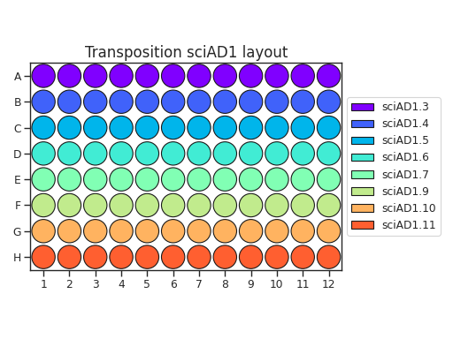
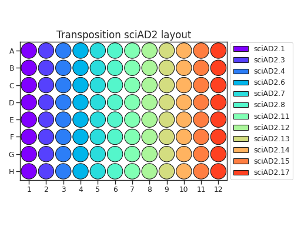

sci-ATAC-seq¶
This protocol is from the STAR Protocols paper, [delPriore2021], with added commentary and suggestions.
You should print out and follow along to the STAR protocols paper while reading this protocol.
Background¶
At a high level, sci-ATAC-seq is a split-pool technique where four successive barcodes are added to each fragment in the library. This allows us to do single-cell analysis without requiring single-cell droplets. The two rounds of barcoding are:
Barcoded transposition, to add condition barcodes. Cells are split at 1k cells / well onto a 96 well plate, where each well of the 96 well plate has a unique pair of transposition barcodes assembled with Tn5. After transposition, all transposed cells are pooled together.
The cells are then split onto plates, where PCR is performed with another set of unique barcodes per well. These PCR rounds add additional barcodes. The cells are sparsely split over the plates such that it is very likely (e.g. via the Poisson distribution) that cells have unique barcodes at this point.
Preparation (N days before)¶
The following steps can be done at any time. The transposition mix and PCR primer plates quantities suggested here make enough mix for multiple experiments. However, check how much is left because it takes some time for large primer orders.
Primer order¶
Note
An Excel sheet that has rows that you can directly copy-paste into Azenta to order primers is here.
Order HPLC-purified transposition primers (sciAD1/sciAD2), in at least 25 nmol scale.
Order (optionally HPLC-purified, not required) PCR primers (sciP1/sciP2) in at least 100 nmol scale.
Order the mosaic end primer, MEComp, in at least 500 nmol scale. The sequence is
C*T*G*T*C*T*C*T*T*A*T*A*C*A, and you should order this with HPLC purification, a5'-Phosphate5’ modification, and a3'ddC3’ modification.
Buffer preparation¶
Estimated time
Multiple hours; put on a good podcast and try to enjoy the pH’ing and measuring.
These buffers should not be reused from other protocols, as we want them as nuclease-free as possible. For solutions that need to be pH’d, it is easier to prepare them in 50 mL tubes, even though we are only making 10 mL solutions.
All buffers except for the DTT can be stored at room temperature for a long time and can also be sink-disposed. You may want to remake if it’s been longer than a year. The DTT is likely good for at least a month.
Prepare 10 mL of 1M Tris pH 8.0 stock solution
Component
Concentration
g / L
Amount / 10 mL
Tris-HCl
1 M
157.64
1.57g
Elga water
to 9 mL
NaOH
to pH 8.0
~300 uL of 12 N NaOH
Elga water
to 10 mL
and 10 mL of 1M Tris pH 7.5 stock solution
Component
Concentration
g / L
Amount / 10 mL
Tris-HCl
1 M
157.64
1.57g
Elga water
to 9 mL
NaOH
to pH 7.5
~140 uL of 12 N NaOH
Elga water
to 10 mL
and 10 mL of 500 mM EDTA stock solution
Component
Concentration
g / L
Amount / 10 mL
EDTA
500 mM
186.1
1.861 g
Elga water
to ~7 mL
NaOH
enough to dissolve
~0.75 mL of 12N NaOH
Elga water
to 10 mL
The EDTA makes the solution acidic. Adding NaOH will help it dissolve. The EDTA stock solution will dissolve, it just takes a decent amount of time on the vortexer.
Prepare 1 mL of 5 mM EDTA
Component
Concentration
Amount / 1 mL
500 mM EDTA
5 mM
10 μL
Elga water
990 μL
Prepare 50 mL of pH 8.0 IDTE
Component
Concentration
g / L
Amount / 10 mL
Tris-HCl
10 mM
1.57
0.0788 g
500 mM EDTA
0.1 mM
10 uL
Elga water
to 50 mL
NaOH
to pH 8.0
~35 uL of 4 N NaOH
Prepare 50 mL of pH 8.5 TE buffer
Component
Concentration
g / L
Amount / 10 mL
Tris-HCl
10 mM
1.57
0.0788 g
Elga water
to 50 mL
NaOH
to pH 8.5
~40 uL of 4 N NaOH
These buffers can be prepared in 15 mL tubes since they do not need to be pH’d.
Prepare 10 mL of 5M NaCl stock solution:
Component
Concentration
g / L
Amount / 10 mL
NaCl
5 M
292.21
2.92g
Elga water
to 10 mL
and 5 mL of 100 mM DTT stock solution:
Component
Concentration
g / L
Amount / 5 mL
DTT
100 mM
15.425
0.077125 g
Elga water
to 5 mL
Note
DTT, as a reducing agent, will slowly degrade / lose its reduction potential. You may want to remake this after a few months. 5 mL is the smallest volume, given our balance accuracy.
Collect unused DTT as a hazardous waste; do not sink dispose.
Prepare the acetate salt buffers. These salts are very hygroscopic! You may have to reorder, and we should possibly store them with silica gel.
Prepare 10 mL of 0.2M Tris-acetate stock solution:
Component
Concentration
g / L
Amount / 10 mL
Tris-acetate
0.2M
36.24
0.3624 g
Elga water
to 10 mL
Prepare 10 mL of 0.5M potassium-acetate stock solution:
Component
Concentration
g / L
Amount / 10 mL
K-acetate
0.5M
490.7
4.9 g
Elga water
to 10 mL
Add in two rounds
Prepare 10 mL of 1.0M magnesium-acetate stock solution:
Component
Concentration
g / L
Amount / 10 mL
Mg-acetate
1.0M
214.46
2.144 g
Elga water
to 10 mL
Add in two rounds
Prepare 10 mL of 1.0M magnesium chloride stock solution:
Component
Concentration
g / L
Amount / 10 mL
MgCl2
1.0M
95.21
0.952 g
Elga water
to 10 mL
Prepare 5 mL of 10% IGEPAL CA-630:
Component
Concentration
Amount / 5 mL
IGEPAL CA-630
10% (v/v)
500 μL
Elga water
to 5 mL
Prepare 5 mL of 10% Tween20:
Component
Concentration
Amount / 5 mL
Tween 20
10% (v/v)
500 μL
Elga water
to 5 mL
Prepare 10 mL of 20% SDS:
Component
Concentration
Amount / 10 mL
SDS
20% (w/v)
2 g
Elga water
to 10 mL
Prepare 10 mL of reverse crosslinking buffer (RCB)
Component
Concentration
Amount / 10 mL
1 M Tris, pH 8.0
100 mM
1 mL
5 M NaCl
100 mM
0.2 mL
20% SDS
0.4%
0.2 mL
Elga water
8.58 mL
Prepare 1 mL of 2.5M glycine stock solution:
Component
Concentration
g / L
Amount / 1 mL
Glycine
2.5M
187.67
0.1876 g
Elga water
to 1 mL
Check that there is enough 7.5% BSA solution; much less than a mL is needed.
Component
Concentration
Amount / 1 mL
BSA
7.5% (w/v)
0.075 g
Elga water
to 1 mL
Primer resuspension¶
Estimated time
90 minutes
Resuspend all primers (sciAD1/sciAD2/sciP1/sciP2/MEComp) in IDTE to a final concentration of 100 μM.
Pipette 50 uL of each PCR primer onto two plates. The recommended plate layouts are:
Make a transposition primer master mix:
Component
Volume per mix
Volume / 20 mixes (+ 5% excess)
100 μM MEComp
13 μL
273 μL
1M Tris, pH 8.0
0.26 μL
5.46 μL
5M NaCL
0.26 μL
5.46 μL
In a PCR plate / PCR tubes, combine 13.5 μL of the master mix with 13 uL of each 100 μM sciAD1.X or sciAD2.X oligos.
Heat the mixes in a thermocycler to 85C for 2 minutes, then cool down to 20C at -1C/minute, or as slowly as possible. When set to a 1% ramp rate, our thermocyclers cool at -3C/minute, which is sufficient.
While the thermocycler is cooling, aliquot ~600 uL of 100% glycerol and put on ice.
Pipette 25 uL of cold 100% glycerol into a PCR plate. Add 25 uL of each cooled mixture to create 20 transposition primer mixes.
Note
100% glycerol is very viscous. I recommend using a 20 uL pipette (it can go up to 25 uL without hitting the end stop) and pipetting very slowly.
The recommended transposition plate layout is:
(Source code, png, hires.png, pdf)
{kind=link}
{kind=link}
Day 1: cell collection and fixation¶
Note
If you have multiple people helping, that person can perform the Tn5 assembly step detailed in the next session while one person is counting/fixing.
If you are doing this yourself, you can assemble the Tn5 either before of after fixation.
Before fixation: this is slightly faster since you don’t have a 30 minute wait step after fixation, but could be annoying if you are e.g. prepping for sorting.
After fixation: conceptually simpler, and you can more accurately lay out your transposition plate based on sorting results, but is 30 minute slower.
Estimated time
2 hours (including cell counting time)
Pre-sort, prepare 7.5% BSA-coated tubes or sort with FBS-containing media. Cells should never be placed into non-coated tubes in non-FBS-containing liquid.
Tip
To BSA coat tubes, place a small amount of 7.5% BSA into a tube, vortex the tube, then aspirate out the BSA.
Determine how many cells in each condition you would like to collect. This protocol allows you to transpose up to 96k cells, split among up to 96 conditions.
If you have enough cells to spare, count at least 100k cells to make later fixation steps easier.
If you do not have 100k cells per condition, count with some amount of excess. For example, if you have 10 conditions, you will need around 10k cells in the transposition. You then may want to sort at least 30k cells.
Sort and count cells, placing them into 7.5% BSA coated tubes. Record the number of cells per tube.
Pellet the cells at 300 g for 3 minutes. Use a bucket rotor if possible to get a tight pellet in the bottom.
Tip
Reducing the centrifuge deceleration speed will also maximize pellet stability.
Aspirate off the supernatant, and resuspend the pellets in 100 uL cold PBS.
Count the cells using a 1:1 dilution in Trypan Blue. Dilute the cells to 100k cells / 100 uL if needed. If you have fewer than 100k cells, leave it resuspended in the cold PBS (e.g. do not concentrate).
Pellet the cells at 300 g for 3 minutes. Do not aspirate the PBS.
Prepare small quantities of 1.6% formaldehyde dilution, at least 6.7 μL per sample. From our 32% stock, this is a twenty-fold dilution. You can alternatively prepare 2.7 μL of 4% formaldehyde per sample.
Freshly prepare a master mix to stop fixation:
Component
Amount per sample
2.5M glycine
5.6 μL
1M Tris, pH 8.0
5.0 μL
7.5% BSA
1.3 μL
Fix cells by adding 6.7 μL of 1.6% formaldehyde or 2.7 μL of 4.0% formaldehyde to each sample, simultaneously diluting the formaldehyde and resuspending the pellet via pipetting.
Incubate the samples at room temperature for 5 minutes. Get ice if you don’t already have some.
Add 11.9 μL of the stop-fixation master mix to each sample.
Incubate on ice for 10 minutes.
Gently add 0.5 mL of cold PBS; try to not disturb cells that have settled to the bottom. Spin at 500 g for 3 minutes.
Carefully aspirate media and again gently add 0.5 mL of cold PBS, trying not to disturb the pellet.
Note
You can pause at this point, with the fixed pellet sitting in PBS. If time allows on day 1, you should proceed to transposition.
Day 1: transposition¶
Transposase assembly¶
Estimated time
1 hour
Note
Work in the genomics hood when preparing these buffers and performing these steps.
Prepare or defrost dilution buffer; this buffer can be stored at -20C for several months.
Component
Concentration
Amount / 100 μL
100% glycerol
50%
50 μL
1M Tris, pH 7.5
50 mM
5 μL
5M NaCL
100 mM
2 μL
5 mM EDTA
0.1 mM
2 μL
100 mM DTT
1 mM
1 μL
10% IGEPAL CA-630
0.1%
1 μL
DEPC water
39 μL
Based on the number of transposition reactions (which are the number of 1k cell aliquots, e.g. 50k cells requires 50 reactions), determine the desired plate layout and total number of Tn5 assembled mixes you need.
There are several dilution steps, so we will name them:
D1 (unloaded): The initial, unloaded Tn5 diluted in dilution buffer.
D2 (loaded): Dilution D1 is mixed with assembled adapters, in a two-fold dilution.
D3 (final): Dilution D2 is further diluted in transposition buffer, then 1 μL of each mix is added to each well.
For every final well, we will be adding 1 μL of the sciAD1.X D3 dilution and 1 μL of the sciAD2.X D3 dilution. This means that we need:
0.5 μL per assembly mix / 1.0 μL total of D2 dilutions
0.25 μL per assembly mix / 0.5 μL total of D1 dilutions per well.
When planning your plate layout, the standard layout uses one sciAD1.X per row and one sciAD2.X per column. The intersection of these two gives the combinatoric barcoding per-well.
(Source code, png, hires.png, pdf)
(Source code, png, hires.png, pdf)
Note
For example, if you have 12 transposition reactions to do (12k cells split across conditions), the most efficient plate layout is a 4 x 3 rectangle. This means that we will use 3 of the sciAD1.X primers and 4 of the sciAD2.X primers.
In total, we need to make 7 Tn5 mixes, and each mix will be used in 3 or 4 wells. This means that we need at least 1.0 μL of D1 dilutions per mix. Accounting for excess, we could make 10.5 uL of D1 mix total (1.5 μL of D1 per mix, diluted to 3 μL D2, diluted to 6 μL D3).
Prepare the unloaded D1 dilution of Tn5 by diluting Tn5 with dilution buffer. Using the Diagenode 2 mg/mL Tn5, the dilution ratio can be at least 1:10 (e.g. 9.0 μL Tn5 diluted to 90 μL). This has been verified to work at 1:10.
For a full 96-well plate, this is in the 70 μL range, depending on how much excess you need in the next step.
For each Tn5 mix required (20 mixes for a whole plate), prepare D2 dilutions by separately combing Z μL of D1 mix with Z μL of pre-annealed adapters. The minimum without excess for N reactions is \(Z=\frac{N}{4}\mu\text{L}\); you should include excess.
For a full 96-well plate, we need at least 8 / 12 reactions worth of mix. This is at least 6 μL; the original protocol recommends Z = 4 μL so that we have 8 μL (2 μL of leftover mix). You can reduce this amount of excess.
For our example above, we can use Z=1.5 μL to have excess.
Incubate the D2 mixes at room temperature for 30 minutes.
While waiting on this, check to see if more 100x protease inhibitor cocktail needs to be made. Dissolve one tablet (one per 50 mL normally) in 500 uL of Elga water, and make small aliquots (25 μL) and store at 4C. The tablets will not fully dissolve; mix well before aliquoting.
Transfer the assembled D2 mixes to ice until right before use.
{kind=link}
{kind=link}
{kind=link}
{kind=link}
Transposition¶
Estimated time
2.5 hours
At this point, you should have a tight cell pellet. If you are resuming the protocol after a delay, spin down the cells at 500 g for 3 minutes before proceeding.
For greater accuracy, you can resuspend and re-count cells. Alternatively, you can use the cell counts you recorded pre-fixation.
Prepare fresh transposition buffer and nuclei isolation buffers.
Transposition buffer, scale down as needed (1.44 mL per plate):
Component
Concentration
Amount / 1.44 mL
0.2 M Tris-acetate
41.25 mM
297 μL
5 M K-acetate
82.5 mM
23.76 μL
1 M Mg-acetate
12.5 mM
18 μL
DMF
20%
288 μl
10% IGEPAL CA-630
0.125%
18 μL
100x Protease inhibitor
0.5%
7.2 μL
DEPC water
788 μL
Nuclei isolation buffer:
Component
Concentration
Amount / 10 mL
1 M Tris, pH 7.5
10 mM
100 μL
5 M NaCl
10 mM
20 μL
1 M MgCl2
3 mM
30 μL
10% IGEPAL CA-630
0.1%
100 μL
Elga/DEPC water
9.75 mL
Carefully remove the PBS from the cell pellets, and resuspend the pellets in PBS to a final concentration of 1K cells / μL.
In a fresh PCR plate, fill 7 μL of transposition buffer into each reaction well.
Add 1 μL of fixed cells to each reaction well, bringing the volume to 8 μL. Record which wells map to each condition.
Dilute each assembled D2 Tn5 mix with an equal volume of transposition buffer to create the final D3 Tn5 mixes. E.g. if you made 4 μL D2 mixes, add 4 μL of transposition buffer.
Add 1 μL of the sciAD1.X mixes (row by row) and add 1 μL of the sciAD2.X mixes (column by column) to each well, matching your plate layout.
Important
This is the first round of combinatoric barcoding! You must know which conditions are in each well and which sciAD1/2 you added to each well; these barcodes are demultiplexed to conditions in the NGS data processing step!
Shake at 300 rpm for 30 minutes at 37C using a ThermoMixer.
Quench the reaction by adding 1 μL of 0.5M EDTA to each well, mixing well.
Shake at 300 rpm for 15 minutes at 37C using a ThermoMixer.
Pool all reactions into a BSA-coated Eppendorf tube. Add 38.4 μL 1M MgCl2 to quench the EDTA and mix well via pipetting.
Pellet cells by spinning at 500 g for 2 minutes.
Remove the supernatant and wash the cells with 1 mL nuclei isolation buffer.
Centrifuge at 500 g for 2 minutes.
Resuspend the cells in 0.5 mL of nuclei isolation buffer, and filter using a 40 μm cell strainer. You can use the 40 μm strainers that fit on top of 50 mL tubes.
Count the cells and dilute them to 13.3 cells / μL, diluting using nuclei isolation buffer.
Determine how many PCR plates you will need. There are enough barcoded PCR primers to split onto 9 PCR plates. Each PCR plate will amplify around 19k cells.
Reverse cross-linking¶
Calculate the amount of RCB you need (400 μL per PCR plate). Then, add 2 uL of 20 mg/mL proteinase K per 1 mL of RCB.
Determine which PCR primers sets you will use for each plate. There are three “sets” of sciP1 and sciP2 primers, which multiplexes onto up to 9 plates. For instance, if you have three PCR plates, you could choose to use sciP1.1-12 for all three plates, but then use sciP2.1-8 for plate 1, sciP2.9-16 for plate 2, and sciP2.17-24 for the third.
Prepare Master Mix 1.X and Master Mix 2.X. The following mixes are given per PCR plate. If you prepare these in a secondary PCR plate / PCR strips, you can use a multichannel in the next step.
Master mix 1.X (one mix per primer):
Component
Amount / PCR plate
Transposed cells (13.3 / μL)
15 μL
10 μM sciP1.X
5 μL
Master mix 2.X (one mix per primer):
Component
Amount / PCR plate
50 μL RCB + Proteinase K
50 μL
10 μM sciP2.X
10 μL
Distribute 2 μL of Master Mix 1 across the PCR plates. Each column should use the same Master Mix 1.X. Record which wells got which master mix.
Distribute 3 μL of Master Mix 2 across the PCR plates. Each row should use the same Master Mix 2.X. Record which wells got which master mix.
Incubate in a thermocycler at 55C for 1 to 16 hours (e.g. overnight).
Day 2: library amplification¶
Minimal amplification¶
Estimated time
45 minutes
Spin down the PCR plate briefly at 300 g for 10 seconds.
Add 5 μL of 10% Tween20 to each well, mixing well via pipetting.
Prepare PCR master mix by combining 1.25 mL of NEBNext PCR mix and 250 μL of Elga water per plate.
Add 15 μL of the PCR mix to each well, pipetting to mix.
Spin down the PCR plate briefly at 300 g for 10 seconds.
Run an initial amplification. This takes about 24 minutes per plate. You can run multiple batches of these, e.g. you don’t need 9 thermocyclers to do so. Leave completed plates at 4C.
Step
Temperature (C)
Time
Cycles
Initial extension
72
5 min
Initial denaturation
98
5 min
Denaturation
98
10 s
5
Annealing
70
30 s
5
Extension
72
1 min
5
Hold
4
Remove the plate and keep it on ice or otherwise at 4C until after the final amplification.
Quantification¶
Estimated time
2 hours
Randomly choose O(5) wells per PCR plate to use for qPCR, using any of the sciP1/P2 primers (this has been done with sciP1.01 and sciP2.01). This works because the primers share a 3’ end.
Prepare qPCR master mix. Using the 2X master mix from the BioMicroCenter, the recipe for a full 96-well plate (with 5% excess) is:
Component |
Amount |
Amount with excess |
|---|---|---|
2x SYBR master mix |
500 μL |
525 μL |
100 μM stock sciP1.01 |
1.0 μL |
1.05 μL |
100 μM stock sciP2.01 |
1.0 μL |
1.05 μL |
DEPC/Elga water |
498 μL |
523 μL |
Sample 1 μL from 3-5 wells of each PCR plate and put it in the qPCR plate, doing at least duplicate technical replicates. Include some blank water wells, where you just place 1 μL of water in each well.
Add 9 μL of master mix to every well, bringing the reaction volume to 10 μL.
Perform qPCR with the following programs, ensuring that you included some blank water wells, following the LightCycler instructions here.
Programs:
Program
Cycles
Analysis mode
Pre-incubation
1
None
Amplification
35
Quantification
Melting curve
1
Melting curve
Cooling
1
None
Details:
Program
Temp
Acquisition mode
Hold
Ramp rate
Acquisitions
Pre-incubation
95
None
00:05:00
4.4
Amplification
95
None
00:00:30
4.4
Amplification
60
None
00:00:45
2.2
Amplification
72
Single
00:00:30
4.4
Melting curve
95
None
00:00:05
4.4
Melting curve
65
None
00:01:00
2.2
Melting curve
97
Continuous
5
Cooling
40
None
00:00:10
1.5
Export the raw fluorescence curves for analysis.
Calculate the average \(\frac{C_t}{3}\) value (e.g. the cycle number to reach 1/3rd the plateau value), ensuring that the water wells do not show comparable amplification. Keep the qPCR plates to run wells on a gel.
Perform N additional cycles of PCR, where \(N = \frac{C_t}{3} - 5\). This minimal amplification ensures that we generate a large enough library without introducing a bunch of PCR duplicates. The extra number of cycles should generally be less than 10. This PCR takes about 25 minutes.
Step
Temperature (C)
Time
Cycles
Initial denaturation
98
30 s
Denaturation
98
10 s
N
Annealing
70
30 s
N
Extension
72
1 min
N
Hold
4
While additional cycles are running, run some of the completed qPCR wells on a gel. You should see a smear of transposition products, with the peak around 800bp-1kb.
Note
A smaller peak indicates overtransposition and means that you can increase the cell loading and/or increase the Tn5 dilution. Over-transposition isn’t necessarily bad, it just possibly makes the data harder to align.
Pool samples from each plate into separate 15 mL conical tubes.
Purify the DNA from each plate using the DNA Clean and Concentration kit (1 column per plate). Use between 3- and 5-fold binding buffer. This will be a lot of binding buffer; it’s fine. Load the column multiple times as needed.
Elute in 12 μL of TE, pH 8.5
Day 3: library quantification¶
Warning
TODO: Library quantification and QC.
References¶
- delPriore2021
Del Priore, I. et al. Protocol for single-cell ATAC sequencing using combinatorial indexing in mouse lung adenocarcinoma. STAR Protocols 2, 100583 (2021).